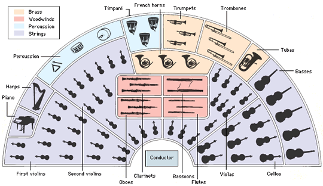

chapter3.1--handout
Background Information
Automobile industry in America in the 1920s(20世纪初的美国汽车行业)
On week-ends his Rolls-Royce became an omnibus, bearing parties to and from the city.（每逢周末，盖茨比的劳斯莱斯轿车就成了公共汽车，往来城里接送客人。）
菲兹杰拉德在书中的这一段描写从侧面反映了当时汽车已经成为美国中产以及上层阶级的出行必备。汽车原本于19世纪起源于欧洲，后经过民间的贸易和博览会等中介渠道，其制造技术由欧洲扩散到美国。到了20年代头十年里，美国汽车产业已经有几百家公司，并且未来汽车工业的巨头都开始逐渐形成，包括福特（Ford）、别克（Buick）以及凯迪拉克（Cadillac）等。
值得一提的是，这股浪潮也造就了美国中西部城市底特律（Detroit）的一段辉煌历史：自1899年建立第一座汽车制造厂起，底特律的经济在汽车行业的刺激下迅速发展，并且在鼎盛时期一度是美国三大汽车公司——通用、福特和克莱斯勒的大本营，拥有“汽车之都”（the Motor City）的美名。
汽车保有量的增长也足以证明当时汽车行业的蓬勃，比如1918年还是只有13分之1的家庭拥有汽车，到了1929年这个比例就变成了5分之4. 从劳动力分布来看，到1925年，全美超过10%的劳动力都集中在了汽车行业的流水线上，从生产（production）、销售（sales）、服务（service）以及加油（fueling）等。比如本书中的Mr. Wilson从事的就是汽车维修。
盖茨比的座驾来自世界顶级的超豪华轿车厂商——劳斯莱斯（Rolls-Royce），1906年成立于英国，公司创始人为亨利·莱斯（Henry Royce）和查理·劳斯（Charles Rolls）. 劳斯莱斯这种有贵族气息的英伦汽车在当时十分受美国富豪的追捧，经常被用来显示自己的身份地位，盖茨比在这里也不例外。
纽约来的轿车五辆一排停在车道上（the cars from New York are parked five deep in the drive）, 也看出盖茨比结交了很多社会上流人士。
在本书中，汽车不仅仅是交通工具，还是一种文化符号，象征了财富和成功，小说中多次出现的汽车暗示了新世界和新的价值观念对美国人的冲击。
汽车在提供出行便利的同时，也对周围的人们造成威胁（比如在后面的故事中，更是致死威尔逊太太的“凶器”）。通过本文重要角色对汽车的态度，侧面揭示了人们无视他人的生命，道德水平下降。折射出当时的美国社会物欲横流，虚浮腐败之风盛行。
Vocabulary
prodigality
n. 浪费，挥霍（excessive spending）
原文：Laughter is easier minute by minute, spilled with prodigality, tipped out at a cheerful word.
笑声每时每刻都变得越来越容易，毫无节制地倾泻出来，只要一句笑话就会引起哄然大笑。
💧prodigality的另一个名词形式是prodigal: the/a prodigal (son) 就是指“回头的浪子；改邪归正的人”，比如：A prodigal who returns is more precious than gold. 浪子回头金不换。
permeate
vt.& vi. 渗透；弥漫；遍布（to spread to every part of an object or a place）
原文：...and floating rounds of cocktails permeate the garden outside...
同时一盘盘鸡尾酒传送到外面花园里的每个角落......
💧permeate 本义是 “渗透，弥漫，扩散”，主语一般是气味、气体，比如：The smell of roast beef permeated the air.
空气中弥漫着烤牛肉的香味。
💧这个词的进阶用法是用来表示“（思想、影响、感情等）感染；传播；扩散 ”，比如：Racism continues to permeate our society.
在我们的社会里，种族主义依然无处不在。
Crush Your Problems
- At least once a fortnight / a corps of caterers came down / with several hundred feet of canvas / and enough colored lights / to make a Christmas tree of Gatsby’s enormous garden.
至少每两周一次，大批包办筵席的人从城里下来，带来好几百英尺帆布帐篷和无数的彩色电灯，足以把盖茨比巨大的花园布置得像一棵圣诞树。
💧表达精讲
①a corps of “（完成某项工作的）一群人”，比如the diplomatic corps是“外交使团”。
corps和corpse辨析
corps只比corpse少一个e, 所以很容易造成混淆，但两者的意思完全没有关联哦~
比如corps除了表示上面的“特别小组”，主要还指“特殊兵种，兵团”：The Corps就是美国海军陆战队。而corpse是指“尸体”（body）.
②to make a Christmas tree of Gatsby's enormous garden 包含了make B of A这个结构，正常语序其实是：make A B (把A变成B，turn A into B)；所以改写之后就是：to make Gatsby's enormous garden a Christmas tree. - The bar is in full swing, / and floating rounds of cocktails / permeate the garden outside, / until the air is alive with / chatter and laughter, / and casual innuendo / and introductions forgotten on the spot, / and enthusiastic meetings between women who never knew each other’s names.
酒吧那边热闹非凡，同时一盘盘鸡尾酒传送到外面花园里的每个角落，到后来整个空气里充满了欢声笑语，充满了脱口而出、转眼就忘的打趣和介绍，充满了彼此始终不知姓名的太太们之间亲热无比的会见。
💧表达精讲
①in full swing “在热烈进行中；处于兴盛阶段”（having reached a very lively level），这里表明了酒吧那边正喧嚣沸腾。比如：When we arrived the party was already in full swing.
我们赶到时，聚会已进入高潮。
②floating rounds of cocktails “一盘盘鸡尾酒”；floating本义是“漂浮着的”，这里需要发挥一下想象力：在人群攒动之中，有时候很难看清是侍者在端着盘子，所以这些酒就好像是漂浮在空中的一样。（感叹Fitzegerald的笔力，寥寥数语就描绘出了当时派对人声鼎沸的盛况）
③ be alive with “充满，（因什么）充满活力”，比如：Her face was alive with excitement.
她兴奋得眉飞色舞。
💧知识拓展
这个句子的with结构占了基本三分之二的长度 ，但读起来却不会感觉累赘，反而非常富有节奏感，比如chatter and laughter里面就藏了两个押韵：
cha[tʃæ]和laugh[læf] 这样的属于Assonance（谐元韵），也就是辅音不同但元音相同；而tter[tə]和ter[tə] 则是我们比较熟悉的Rhyme（尾韵），也就是辅音和元音都相同。
而在innuendo and introductions里面隐藏了我们前面提到过的Alliteration（头韵），两个单词的开头都重复了[ɪn]这两个辅音。
了解押韵方面的知识可以帮助我们从理论上更好地理解Fitzegerald写作语言的诗意，但如果要更直接地感受语言的魅力还是要靠自己开口朗读哦~ - The groups change more swiftly, / swell with new arrivals, / dissolve and form in the same breath...
人群的变化越来越快，忽而随着新来的客人而增大，忽而分散后又立即重新组合。
💧表达精讲
①swell with “增大”，这个短语也可以用来表示感情/情绪，比如：His heart swelled with pride as he watched his daughter collect her prize.
他看着女儿领奖，心中充满了自豪。
②in the same breath “同时”，这是一个很生动的俚语，和at the same time意思相近，一般用于比较两个相反的动作，或者一个动作发生后另一个相反的动作马上又发生。比如这里就是形容“人群分散后又立即重新组合”。 - （接上句）...already there are wanderers, / confident girls who weave here and there / among the stouter and more stable, / become / for a sharp, joyous moment / the centre of a group, / and then, excited with triumph, / glide on through the sea-change / of faces and voices and color / under the constantly changing light.
已经有一些人在东飘西荡——脸皮厚的年轻姑娘在比较稳定的人群中间钻进钻出，一会儿在片刻的欢腾中成为一群人注意的中心，一会儿又得意洋洋在不断变化的灯光下穿过变幻不定的面孔、声音和色彩扬长而去。
💧表达精讲
①weave 非常生动，这个词本身有“编，织”的意思，这里是形容“在人潮里穿进穿出”；
②the stouter and more stable “更坚固稳定的”，和上面提到的“分散聚合很快的人群”形成对比；
③sea-change 表示“巨变”（A sea change in someone's attitudes or behavior is a complete change）. - Dressed up in white flannels / I went over to his lawn / a little after seven, and wandered around / rather ill at ease / among swirls and eddies of people / I didn’t know — / though here and there was a face / I had noticed on the commuting train.
晚上七点一过，我身穿一套白法兰绒便装走过去到他的草坪上，很不自在地在一群群我不认识的人中间晃来晃去——虽然偶尔也有一个我在市郊往返列车上见过的面孔。
💧表达精讲
①ill at ease 表示not feeling easy, uncomfortable.
②swirls and eddies of people, swirl表示“旋涡”，eddies也是类似的“（水或空气的）涡流”；swirls and eddies一般用于气象学当中，这里用来形容人群如旋涡一般，很形象地表现出Nick可能已经在汹涌的人潮里转晕了。 - A tray of cocktails floated at us / through the twilight, / and we sat down at a table / with the two girls in yellow / and three men, / each one introduced to us / as Mr. Mumble.
一盘鸡尾酒在暮色苍茫中飘到我们面前，我们就在一张桌子旁坐下，同座的还有那两个穿黄衣的姑娘和三个男的，介绍给我们的时候名字全含含糊糊一带而过
💧知识拓展
Mr. Mumble并不是真的姓Mumble哦~ mumble的本义是“咕哝，含糊地说”，这里是形容两个姑娘在介绍另外三位男士姓名的时候吐字不清晰，所以Nick压根没听清楚他们姓什么，便称作了Mr. Mumble.
Content Analysis
💧Clue 1: The party at Gatsby's mansion is really extravagant.
在纽约的聚会结束后，作者紧接着就在新的篇章里描绘了在盖茨比的豪宅里举办的派对，并且极力渲染出了一种无与伦比的奢靡豪华：来参加派对的人可以尽情地享受盖茨比的私人汽艇还有沙滩（his guests diving from the tower of his raft, or taking the sun on the hot sand of his beach）、免费的劳斯莱斯接驳往返、以及琳琅满目的饕餮盛宴……
为了渲染这种极尽铺张的派头，作者在用词上也藏了很多心思，我们来看看下面两个细节——
Evidence 1: On buffet tables, garnished with glistening hors-d’oeuvre, spiced baked hams crowded against salads of harlequin designs and pastry pigs and turkeys bewitched to a dark gold.
自助餐桌上各色冷盘琳琅满目，一只只五香火腿周围摆满了五花八门的色拉、烤得金黄的乳猪和火鸡。
glistening（闪耀的）和harlequin（五颜六色的）突出了视觉上的“炫目”，而且harlequin这个词一般不会用来形容食物，比较常见的是指“由菱形图案组成的彩色地板”（harlequin floor），可以看出作者用词非常大胆。再比如，“烤得金黄”用了bewitched to a dark gold这个表达，bewitched, “像施了魔法一样”，在强调这一切都非常fantastic的同时也暗示了一种不真实感。
Evidence 2:By seven o’clock the orchestra has arrived, no thin five-piece affair, but a whole pitful of oboes and trombones and saxophones and viols and cornets and piccolos, and low and high drums.
七点以前乐队到达，决不是什么五人小乐队，而是配备齐全的整班人马，双簧管、长号、萨克斯管、大小提琴、短号、短笛、高低音铜鼓，应有尽有。
five-piece affair是“五人乐队”（five-piece band）, 也就是当时在纽约举行派对的标配（usually hired for typical New York parties），但在盖茨比的聚会上，他请来的是a whole pitful of——也就是演奏各种乐器的乐手。orchescha pit是“（剧场舞台前凹陷的乐池，乐队席）乐池”，a whole pitful of就表示“一整个乐池的”。由此可见其派对隆重之极，连剧院演出的乐队阵势都搬过来了。
💧Clue 2: The parties are elaborately plotted by Gatsby.
为什么说这些聚会是Gatsby精心安排的呢？我们可以来看一下Nick是怎么来到聚会上的：
Evidence 1: I believe that on the first night I went to Gatsby’s house I was one of the few guests who had actually been invited. People were not invited — they went there. 我相信那天晚上我第一次到盖茨比家去时，我是少数几个真正接到请帖的客人之一。人们并不是邀请来的——他们是自己来的。
Nick并不属于上流社会，他只是住在盖茨比豪宅旁边的平房里的一个普通白领 ，而盖茨比是特地安排司机给他送去请帖的（A chauffeur in a uniform of robin’s-egg blue crossed my lawn early that Saturday morning with a surprisingly formal note from his employer）. 相反，其他大部分客人都是不知所以而来的（也许是这里夜夜笙歌把他们吸引来了，又或者是大家口耳相传而来）。
Nick就住在Gatsby豪宅的旁边，当然不可能不知道这里有派对；而即便这样，盖茨比也要特地邀请，并且在请帖里签上自己的名字（"signed Jay Gatsby'）. 这一举动可以说是真的很匪夷所思了。
大家应该还有印象，Nick在派对上遇见了Jordan, 并且通过她和其她两位女客人的聊天，我们可以知道这已经不是她第一次来参加Gatsby的聚会了——
Evidence 2: “You don’t know who we are,” said one of the girls in yellow, “but we met you here about a month ago.”
"你不知道我们是谁，"两个穿黄衣的姑娘中的一个说，"可是大约一个月以前我们在这儿见过面。"
Nick作为Daisy的远房表亲（也可能Gatsby不知道这层关系 ，只是那天晚上看到了Nick从她家作客回来，所以认为他们关系不一般），而Jordan作为Daisy的密友，是不是可以据此揣摩Gatsby的动机和目的呢？
Today's Bonus
💧1. Orchestra vs. Jazz band
刚刚说到盖茨比的聚会上并没有请纽约的派对一般用的“五人乐队”（这里更多是指爵士乐队），而是请了整个管弦乐队过来（By seven o’clock the orchestra has arrived, no thin five-piece affair, but a whole pitful of...）
管弦乐团 (Orchestra) 一般指由弦乐器、管乐器（以及打击乐器）组成的音乐表演团队都可以称为管弦乐团。
一般来说，管弦乐团的声部由以下乐器演奏： 弦乐器：小提琴（violin），中提琴（viola），大提琴（cello），低音提琴（contrabass） 木管乐器：长笛（flute），单簧管（clarionet），双簧管（oboe），英国管（Cor anglais），大管（bassoon） 铜管乐器：圆号（corno），小号（trumpet），长号（trombone），大号（tuba） 打击乐器：定音鼓（timpani），大鼓（bass drum），小军鼓（snare drum），三角铁（triangolo）等。

Gatsby的聚会上首先演奏起yellow cocktail music，在我们现实生活中其实不存在这种音乐，这里应该是指在Gatsby的聚会上演奏的爵士乐。
yellow只是为了增加整本书的黄色/金色主题。它既象征着聚会的奢华、财富和魅力，也象征着衰朽与疾病（这种贫富观念在小说中是非常相关的）。
爵士乐队（Jazz band）的组成通常由成员的数量和演奏的爵士风格各不相同，但爵士乐队一般由节奏部分（rhythm section）和管乐器（铜管或木管）部分（horn section）组成。
节奏部分包括打击乐器（percussion）、重低音（double bass）或低音吉他（bass guitar），还要有一种能演奏和弦的乐器，如钢琴、吉他、哈蒙德风琴（Hammond organ ）或电颤琴（vibraphone）；木管乐器部分主要是单簧管（clarinet）和萨克斯风（saxophone）；铜管乐器主要是小号（trumpet），大号（tuba）和圆号（corno）等。

爵士乐大师之——迈尔斯·戴维斯 Miles Davis
迈尔斯·戴维斯（Miles Davis）素有“黑暗王子”之称，他的一生都在创新，参与缔造了Cool、HardBop、Modal、Fusion等曲风。他曾说过音乐对他来说是一种折磨，因为当他清醒时脑袋中除了音乐其他什么也没有。音乐是他的生命。
最受欢迎的爵士曲"So What"是迈尔斯·戴维斯在Kind of Blue中的第一支曲。 这个组合的阵容包括Miles Davis, John Coltrane, Cannonball, Evans, Chambers, and Cobb，绝对是爵士乐史上最伟大的阵容。
昨天的小作业：
man of the cloth现在一般指“牧师”，或者是宗教类事务当中的“精神领袖”。但是在早期，这个词可以用来泛指专门从事某一行业的人，the cloth就是指他们穿的特定的制服（uniform）. 比如面包师的制服就是围裙（apron）和厨师帽（chef's hat）啦~